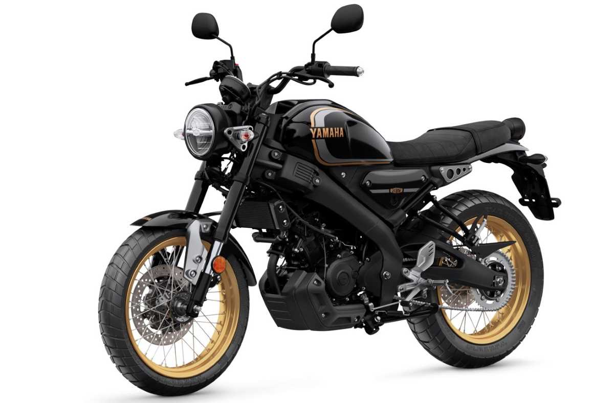
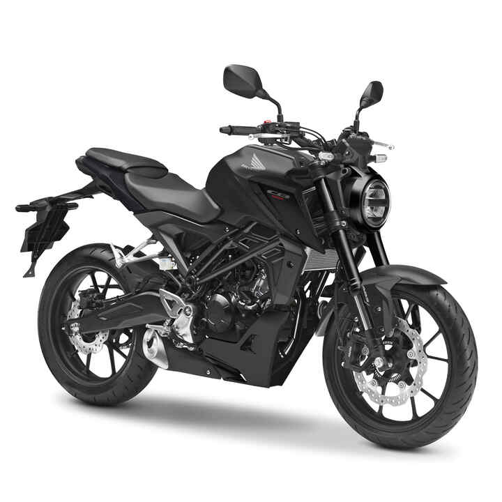

MOTOS 125cc
Las motos 125cc son unas de las motos con menor cilindrada, en España pueden ser llevadas con el permiso de conducción A1 que puede obtenerse con tan solo 16 años de edad.
Bien es verdad que este permiso solo autoriza a llevar motos con menos de 11Kw (15cv) de potencia máxima y con una relación potencia peso que no puede superar al 0,1 kw/kg, pero no es lo único que estas motos pueden ofrecer.
MOTOS PARA EL PERMISO A1
Devido a las limitaciones de potencia y medioambientales las motos legales para este permiso son todas relativamente lentas y 4t, pero incluso con estas restricciones pueden encontrarse muy buenas opciones para una primera moto.
En este apartado daremos una lista de las mejores opciones de cada estilo de moto y algunas opciones alternativas siempre desde un punto de vista que aun estando basado en datos tiene un componente de subjetividad.
CAFÉ RACER/SCRAMBLER
1. YAMAJA XSR 125 (legacy)
Esta moto destaca por sus acabados y por el gran número de extras y modificaciones que se le pueden hacer de agencia, siendo muy personalizable. El hecho de estar hablando de una Yamaha ya nos transmite bastante seguridad, ya que la casa japonesa es famosa por sus motos de alto rendimineto y fiabilidad, no obstante todo esto tiene un precio cuanto menos elevado de 5499 euros en su versión legacy y de base.
Hablando ahora de las especificaciones técnicas, esta moto cuenta con un motor monocilíndrico de refrigeración líquida con 124cc y carter húmedo, con una relación de compresión de 11:2 y un diámetro por carrera de 52,0 x 58,6 mm que expulsa 11kw (15cv) y un par motor de 11,5Nm, el arranque del motor es eléctrico como también lo es la inyección de gasolina. El giro se transmite a la llanta trasera mediante una caja de cambios de seis velocidades conectada a una transmisión de cadena y separada del motor por un embrague húmedo multidisco.
Pasamos al parte ciclo, y es que esta moto tiene suspensión delantera de horquilla telescópica invertida de 37mm con un recorrido de 130mm, mientras que la suspensión trasera es un brazo hoscilante con un recorrido de 110mm. Esto va ensamblado a un chasis de diamante y a unas llantas de 17 pulgadas con un sistema de frenado que cuenta con dos discos hidráulicos de 267mm delante y 220 detrás.
Ofrece además un depósito de combustible de 10l y un peso en orden de marcha de 140kg, con una accesible altura del sillín de 815mm..
2. HONDA CB 125 R
Eta es la mayor rival de la Yamaha XSR 125, la hermana pequeña de la saga cb tan mítica de la casa japonesa presenta unas características y prestaciones que rivalizan con las de la Yamaha con un precio algo más contenido lo que la convierte en una de las opciones más atractivas para una primera montura.
La moto tiene un comportamiento docil pero se le notan las ganas de correr, tiene buena salida en primera y las marchas están correctamente alineadas. Es una moto ideal para aprender ya que es muy comprensiba y perdona en seguida los errores, lo cual no quita que el acelerador tiene fuerza de salida y puede dar algún susto si se usa de forma brusca.
Como era de esperar viniendo de una moto de tan baja cilindrada es una moto urbana sobresaliente y es extremádamente ágil, convinando unas dimensiones reducidas, un peso ligero y una salida que como ya hemos mencionado es potente. Gracias a estas características también podemos decir que es una moto maniobrable que con una altura similar a la de la Yamaha no opone resistencia a los moteros más bajos.
Ahora entramos en el terreno de los números y en una comparación más objetiva de las motos. La Honda cb 125 r cuenta con un motor monocilíndrico de refrigeración líquida con 125cc, doble árbol de levas y 4 válvulas. La relación del compresión es de 11,3:1 y el diámetro por carrera es de 57,3mm x 48,4mm, y gracias a todo esto este motor con arranque eléctrico expulsa 11kw(15cv) y 11,6Nm.